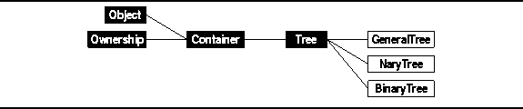
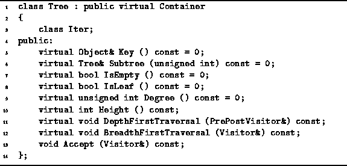

Data Structures and Algorithms
with Object-Oriented Design Patterns in C++
Data Structures and Algorithms
with Object-Oriented Design Patterns in C++
In this section we consider the implementation of trees
including general trees, N-ary trees, and binary trees.
The implementations presented have been developed in the context
of the abstract data type framework presented in Chapter  .
I.e., the various types of trees are viewed
as classes of containers
as shown in Figure .
.
I.e., the various types of trees are viewed
as classes of containers
as shown in Figure .

Figure: Object Class Hierarchy
Program declares the Tree abstract class.
The Tree class encapsulates those interface elements
which are common to all of the tree implementations presented in this chapter.
The Tree class combines the tree interface
with the container interface given in Section .

Program: Tree Class Definition
The Tree class adds the following functions to the public interface inherited from the Container base class:
).
Both of these functions perform a traversal.
I.e., all the nodes of the tree are visited systematically.
The former takes a reference to a PrePostVisitor
and the latter takes a reference to a Visitor.
When a node is visited,
the appropriate functions of the visitor are applied to that node.
The preceding member functions of the Tree class are all pure virtual functions. Therefore, the Tree class is an abstract base class from which specific concrete tree classes are derived.
 Copyright © 1997 by Bruno R. Preiss, P.Eng. All rights reserved.
Copyright © 1997 by Bruno R. Preiss, P.Eng. All rights reserved.